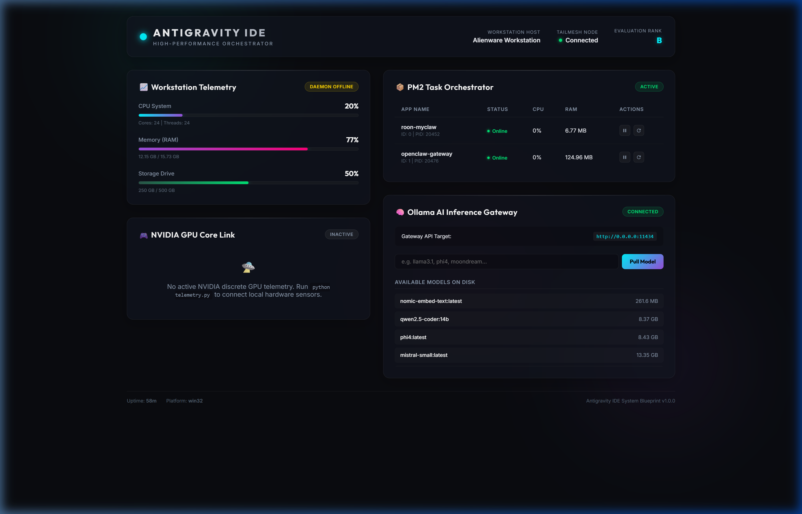

Stop managing the machine. Start building the future. Kinetix IDE is a premium workstation orchestration template that brings speed, order, and telemetry to multi-agent AI environments.

Click the controls below to simulate local workloads and see how Kinetix automatically partitions tasks to eliminate latency spikes.
A single deployment script checks Node.js, configures PM2 background daemons, downloads local libraries, and prepares the core console in under 15 seconds.
A beautiful glassmorphic monitoring dashboard visualizing CPU workloads, VRAM usage, disk capacity, and local Ollama inference model lists.
Pre-configured scheduler mappings for 24-thread/16-core platforms that partition background tasks to E-cores, keeping P-cores clear for builds.
Integrated Ollama API routing that dynamically monitors GPU acceleration and alerts you when LLM contexts spill over into system RAM.
| Parameter | Default State | Kinetix Optimized State | Operational Advantage |
|---|---|---|---|
| Libuv Threadpool | 4 threads | 24 threads | Eliminates event loop delays during parallel RAG processes. |
| V8 Heap Bounds | 1.4 GB | 8 GB (8192 MB) | Prevents fatal memory crashes under massive document builds. |
| Core Affinity | Unmanaged | P/E-Core Segmented | Prioritizes local compiling and inference logic over logs. |
| Process Daemon | Manual startup | PM2 Managed | Ensures auto-recovery and persistent workstation telemetry. |
Purchase the Kinetix IDE Blueprint and get instant access to the configuration files, installation scripts, manual documentation, and the custom console.
Unlock on GitHub Sponsors — $19